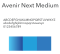

GGP Mobile App
POSITION
MOBILE DESIGNER
TOOLS & SKILLS USED
SKETCH - INVISION
PROJECT OVERVIEW
As one of our products at Controlco, we provide a mobile version of our building automation websites. This version is heavily used by technicians and electricians onsite when they're maintaining data centers and central plant equipment. Unlike its desktop counterpart, users can only view data and not edit it. The mobile version is a stripped down version of the websites we provide for our users, which means no visual graphics or floormaps. As the lead for our client, GGP, I was tasked with giving our mobile entity a facelift. I needed to come up with a design that will let users access their buildings and sift through different operational systems like HVAC and lighting.

PROBLEMS TO SOLVE
The VP of operations assigned this task to me because he already liked my design guides for our previous projects. The main reason why he wanted a re-design was because our current mobile version didn't keep up with the latest design trends. Instead, it was cluttered, it was using different fonts, and it was designed by our president, who is neither a designer or a developer. The interface wasn't intuitive, as users would have to open collapsible menu after collapsible menu to find what they were looking for. I was envisioning the solution in my head, but one thing remained a problem:
"Out of the hundreds of pieces of data, which ones do I show on the mobile version?"
To answer this, I did some user research with our existing clients. Through emails, RingCentral conferences, and in person, I spoke with project managers, data modelers, and my VP. The conclusion: users want to be able to see quick summaries of air handler units, lighting panels, alarms, and central plant systems if available. While we typically provide graphics of HVAC equipment for the desktop website, we omitted them for the mobile version because our clients said they were more interested in just the data. Using Sketch, I designed a storyboard that will give users the access to these systems. Upon opening the app, users will be prompted to log in. Once they do that, they'll land on the homescreen which displays the summaries of each system. If authorized, users can switch between GGP malls and view the statuses pertaining to that property.

Home: This screen shows summaries of HVAC, lighting, alarms and central plant data. Users will be able to decide where they should focus their attention by looking at this screen.
HVAC: When users come across this screen, they will see different HVAC systems. Some properties will have central plants and miscellaneous things. Clicking on the HVAC button will show all of the air handler units in the next screen. If users tap a unit, it will show further details about that specific unit.
Lighting: Just like the HVAC screen, the lighting panels are shown in a list of boxes which can be further delved into by tapping on a panel.
Malls: This option will allow users to open a list of other properties to look at .
THE LOOK AND FEEL
After figuring out the architecture of data and how users will flow through the screens, it was time to work on the visual aesthetics of the app. My VP wanted to use blue as the theme color. We normally use flat colors on the website, but I wanted to add more depth to give our app an updated and edgy look via gradients. For the type, I used Avenir Next because it was legible and minimal even when optimized for mobile.


RESULTS
I showcased the design to my team through a PDF but also with an InVision prototype. After being tested by a few users, it received a lot of positive comments, especially because it behaved similarly to modern day apps. It's now in queue for development. This project is particularly important because it was the first of many re-designs promised for GGP, and I had the pleasure of creating it.